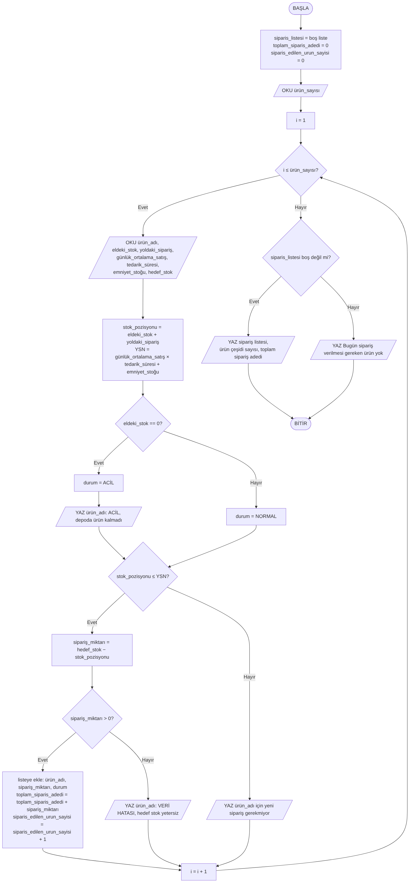
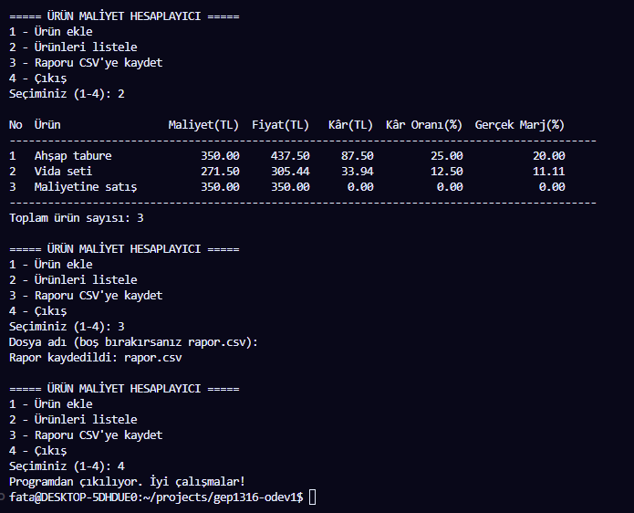
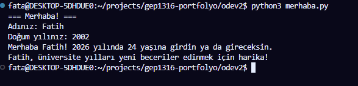
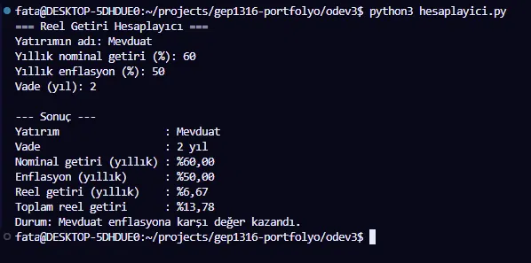

Projeler
BAU GEP1316 Kodlama Okuryazarlığı dersinde hazırladığım çalışmalar. Her birinde yapay zekâyı bir araç olarak kullandım; çıktısını kontrol etmek ve sonucun sorumluluğu bendeydi.
4 proje gösteriliyor.
-

Haftalık Ödev 1
Stok Yeniden Sipariş Kontrolü
- Algoritma
- Ekonomi
Küçük bir toptancının deposunda hangi ürünlerin yeniden sipariş edileceğine karar veren algoritma. Her ürünün stok pozisyonu yeniden sipariş noktasıyla karşılaştırılır; sözde kod ve akış şemasıyla anlatılmıştır.
Ne öğrendim: Sipariş miktarı sıfır ya da negatif çıktığında ürünün sessizce kaybolduğu durumu hem Gemini'ın hem de benim ilk taslağımın atladığını gördüm; en zor yakalanan hataların hiçbir uyarı vermeyenler olduğunu öğrendim.
GitHub'da incele: Haftalık Ödev 1 -

Ara Değerlendirme Ödevi 1
Maliyet Hesaplayıcı
- Python
- Ekonomi
Küçük üretim atölyeleri için ürün maliyetini ve satış fiyatını hesaplayıp sonuçları Excel'de açılabilen bir CSV raporuna kaydeden komut satırı programı.
Ne öğrendim: Maliyet üzerine kâr oranıyla kâr marjının farklı olduğunu (%25 kâr oranı, %20 kâr marjı demek) ve YZ'nin bu iki kavramı karıştırabildiğini, örnek sayıları kendim kontrol ederek öğrendim.
GitHub'da incele: Ara Değerlendirme Ödevi 1 -

Haftalık Ödev 2
Yaş Hesaplayan Karşılama Programı
- Python
Kullanıcının adını ve doğum yılını alıp yaşını hesaplayan, yaş aralığına göre kişiye özel bir mesaj yazan program. Her kod satırı Türkçe yorumla açıklanmıştır.
Ne öğrendim: Kullanıcı girdisine güvenmemeyi; boş, harfli ve sınır dışı değerleri
GitHub'da incele: Haftalık Ödev 2try/exceptve döngüyle yakalayıp soruyu yeniden sormayı öğrendim. -

Haftalık Ödev 3
Reel Getiri Hesaplayıcısı
- Python
- Ekonomi
Nominal getiri, enflasyon ve vadeden Fisher denkleminin kesin hâliyle yıllık ve toplam reel getiriyi hesaplayan program. YZ'nin bilerek eklediği gizli bir mantık hatasını testlerle bulup düzelttim.
Ne öğrendim: Beklenen değerleri önceden kendim hesaplamanın, işareti doğru ama değeri yanlış çıkan bir hatayı yakalamamı sağladığını öğrendim.
GitHub'da incele: Haftalık Ödev 3